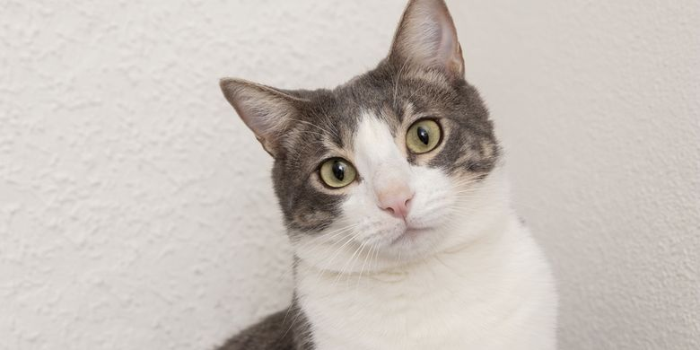

CatCSS

Kucing adalah hewan peliharaan yang sangat populer karena sifatnya yang lucu, menggemaskan, dan penuh kasih sayang. Dengan bulu lembut serta tatapan mata yang memikat, kucing mampu
mencuri perhatian siapa saja. Selain itu, kucing dikenal sebagai hewan yang mandiri namun tetap bisa menjadi teman setia bagi pemiliknya.
DogCSS

Dog/anjing memiliki kemampuan luar biasa dalam melindungi dan membantu manusia. Beberapa jenis anjing bahkan dilatih khusus untuk menjadi pemandu, penjaga,
hingga penyelamat. Sifatnya yang loyal dan penuh perhatian membuat anjing menjadi hewan peliharaan yang dicintai banyak orang di seluruh dunia.